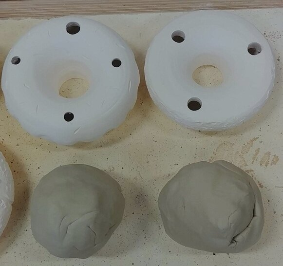
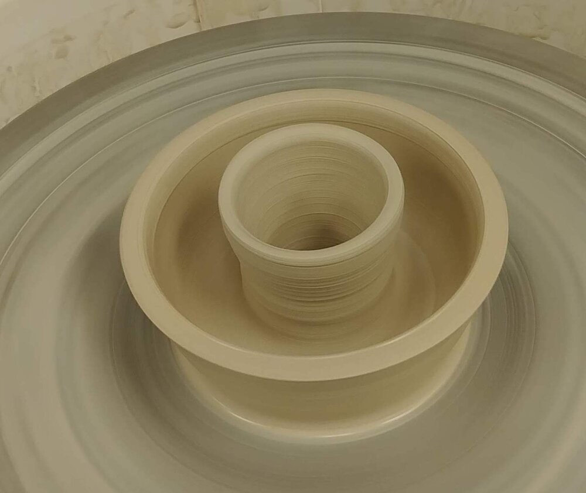
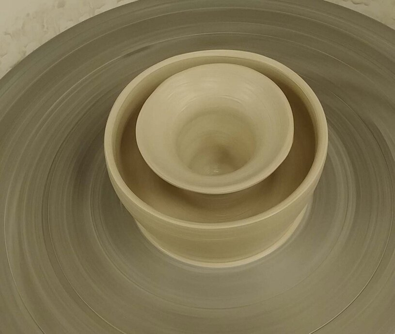
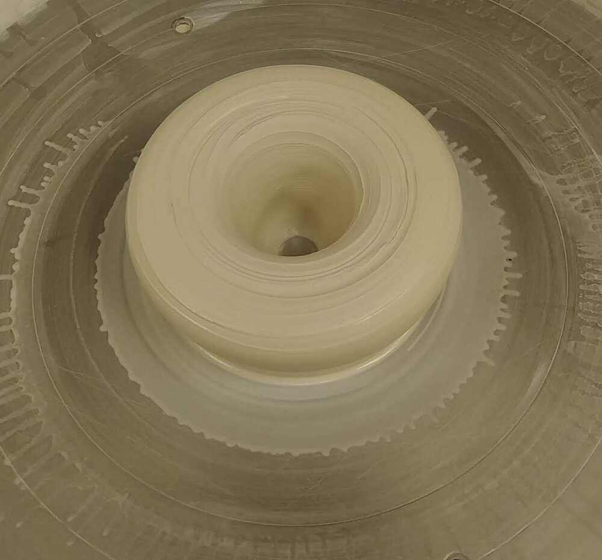
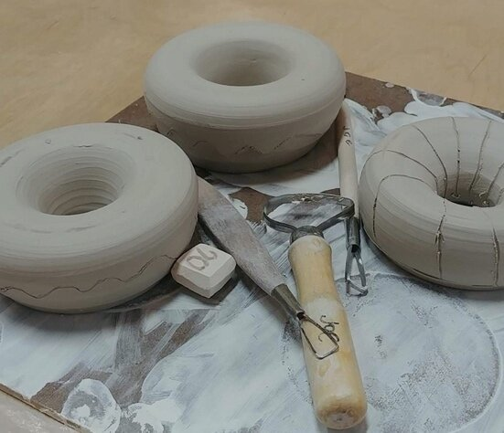
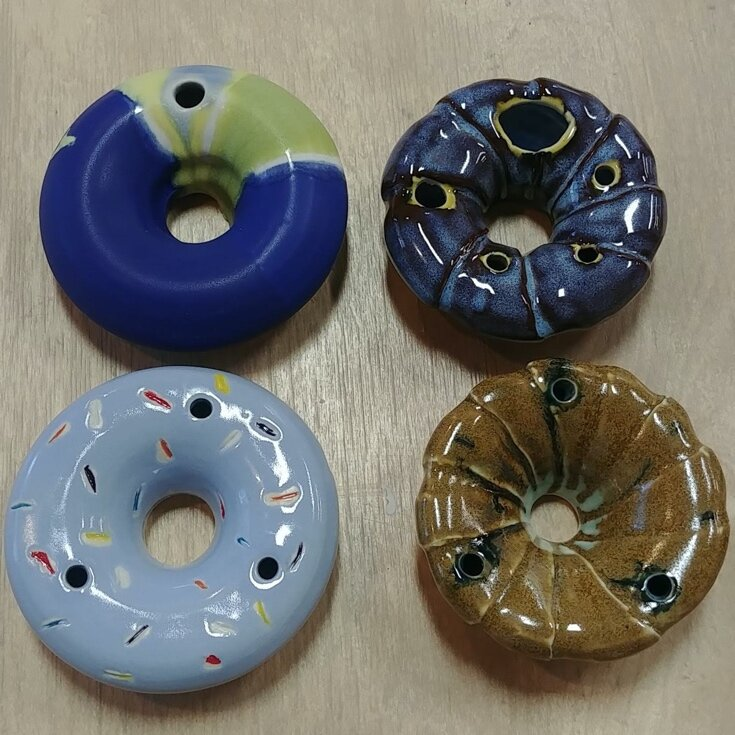

Donut Judge

So, why donuts? I feel that donuts are a universally regarded as a happy treat. I wanted to take something that lasts mere seconds (at least when I get my hands on them) and set them in ceramic to last a lifetime. I’ve sculpted and shaped each donut into ones with sprinkles, abstract designs and inspiration from the French cruller (my personal favorite)!
Here’s the process:
1. Each donut starts as a mound of clay approximately 1 lb in weight

2. They then get centered on a wheel before it gets opened up

3. After getting centered, the mound is then opened up all the way through to the bottom of the wheel
4. Two wall are then brought up carefully

5. And then lifted evenly so they can then be collared

6. Collaring is where it starts to get difficult and I lost a few pieces at this stage

7. Closing the two walls together is a magical feeling and I guess that’s why I made so many of them! To feel that magic over and over again

8. Finally, the donut gets a clean-up job before it’s cut off the wheel

9. These have been lightly covered with plastic and drying slowly on my shelf for a bout a week

10. Waiting to get trimmed

11. Sculpting and adding sprinkles

12. Glazed and ready!
